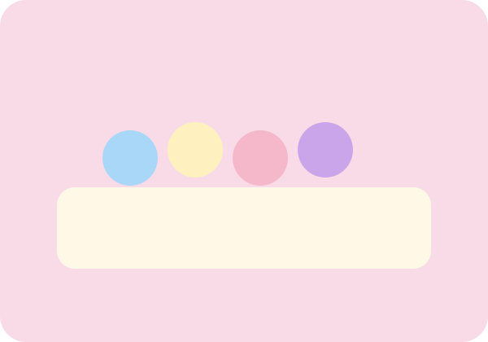
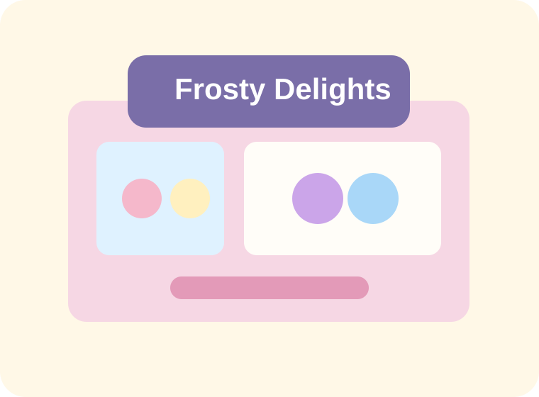
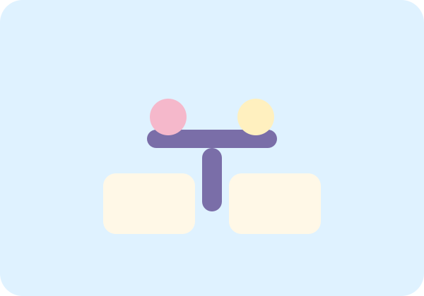
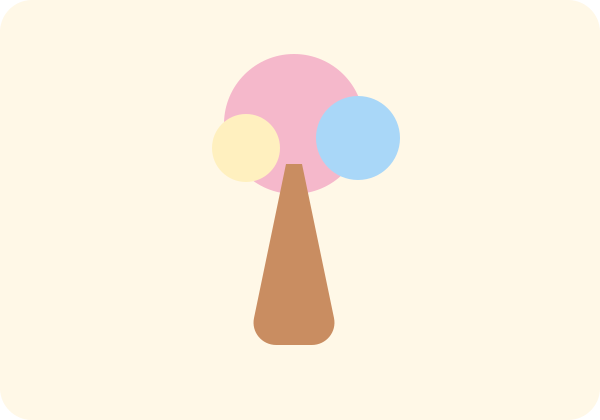

Our Story
A neighborhood cafe built around softness, flavor, and joy.
Frosty Delights began as a tiny idea: turn an afternoon dessert stop into an experience that feels playful, memorable, and comforting.
For this project, the cafe concept becomes a complete web application that demonstrates frontend design, backend routing, and database-driven content management.

Cafe Moments
Pastel corners, soft lighting, and a cheerful scoop bar

